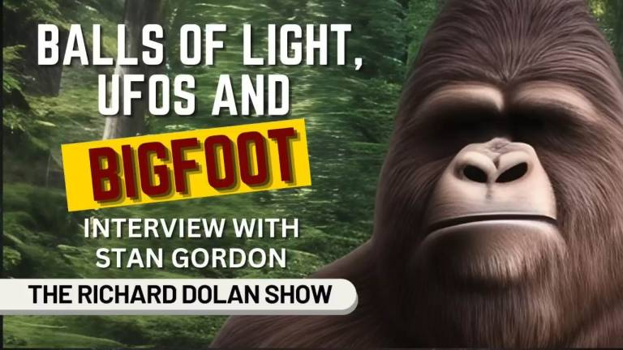

Stan Gordon : 地上に UFO と 謎の生物を大勢が目撃 → 生物に発砲 → UFO が消滅 → 付近はしばらく発光 ⇒ この謎を解く

履歴
(2023-06-13) 追加。Google 謹製の文字起こしを破棄し、Whisper AI で差し替えた。ついでにこの事件の謎の解明を試みた。
(2022-12-12) 作成。 Stan Gordon :1973-10-25, Uniontown(PA): 地上に UFO と 謎の生物を大勢が目撃 → 生物に発砲 → UFO が消滅 → 付近はしばらく発光 (2022-12-12)
この事件の解明を試みる
ベテラン UFO 研究者の Stan Gordon が長年調査してきた UFO/Bigfoot 事例の中で最も不思議な事例として 2件列挙して詳しく語っているが、この事件はその 2件の中の一つ。
まず、この事件の証言を要約すると以下のようになる。
(1) UFO を最初に目撃した時には「納屋ほどの大きさの赤い球」だったのが、いつの間にか、
「今は完全な丸い球体ではありません。 半球のような、直径100フィートほどの大きな白いドームのようなものです。 平らです。底が平らになっているように見えます」
というように、UFO のサイズも形状も大きく変化していた。UFO に接近すると車のヘッドライトの照度が低下。
(2) この UFO の他に、2体 の Bigfoot が出現。Bigfoot に発砲すると UFO が消失。
(3) Bigfoot は複数の銃弾が命中しても無影響（で去った）。
(4) UFO が着陸した現場一帯は、呼ばれた警官が到着した時でも明るく自然発光し続けていた。（DeepL はこの箇所を真逆に誤訳している）
以上の証言から以下のように判断できる。
UFO の正体は EMF 異常による局所的だが比較的大きなサイズ（5,6m～30m ）の大気中の発光現象(*1)だった。警官が到着した時点では発光は大幅に薄れたが、発光範囲はぼんやりとより広範囲に広がっていた。
現場の EMF 異常に晒されたために意識障害を引き起こし、Bigfoot の幻覚を見た。赤子の泣き声は幻聴。Bigfoot は 2人が目撃しているので共鳴的認知の可能性もあるが、たぶん「事後の記憶結晶化」(*3)によるものだろう。
BIgfoot に銃弾を発射した時に UFO が消滅したのは下の過去記事、
- 過去記事でも述べたが、火薬の煙には（空気に比べると）導電性がある。銃弾の煙に貫かれた orb は、電気的には両端に長いダイポール・アンテナを伸ばした球体（or 回転楕円体）と見なすことができる。周囲の EMF異常の電磁エネルギーがそのアンテナによって orb に吸収され、orb のエネルギー・レベルが上昇した…このように判断できる。 - 以上、雑な定性的説明だが、他に合理的な説明は私には思いつかない。ref: Richard Haines 博士：UFO に射撃した二つの事例。共に同じ変化を示した。⇒ この機序を推測する (2023-03-23)
と同様の機序だろう。つまり（若干の導電性がある）伸びた弾道が周囲の EMF 異常の電場を乱したために、先の大気中の発光現象が停止した（or 光度が大幅に低下し目につかなくなった）。現場の環境条件によって EMF 異常の様相が異なるため、弾道が発光現象を強める場合もあれば、弱める場合もあるのだと考える。
以上がこの事件に関する憶測や仮説を混じえた雑で定性的な説明なので「解明」と呼ぶのはかなりの無理があるが、解明の「試み」にはなっている筈。何れにせよ、大筋では実態と大きく外れてはいない筈。
(*1)
通常の orb は 1,2cm～60cm のサイズだが、この事件の UFO はその 10～50倍のサイズなので、orb の群れ（*2）もしくは orb とは若干モードが異なる EMF 異常による大気中の発光現象だと思える。
そのような比較的広い範囲の発光現象の機序の詳細は未解明だが、Skinwalker ranch や Magic Mesa で動画撮影された発光現象と共通の機序に基づくものだと思える。実際、Skinwalker ranch では頻繁に orb が目撃され、動画撮影もされているし、EMF 異常はもっと頻繁に起きている。
Magic Mesa : 台地が脈動的に発光。その動画 （途中3） (2023-03-31)
❑ Skinwalker ranch : 夜間、台地が広範囲に発光した （途中1） (2023-06-05)
(*2)
orb の集合体（群れ）を UFO と誤解した事例が下。
Preston Dennett : 1982, CA : 道路脇に多色の奇妙な UFO が着陸 → missing-time、発話に一時的障害、運転者が入れ替わっていた （途中1） (2023-02-25)
(*3)
事後の記憶結晶化…
以下の過去記事で「事後の記憶結晶化」の機序の詳細を述べた。
1955年ケンタッキー：「Kelly-Hopkinsville の異星人遭遇事件」の謎を解く (2022-04-08)
(2022-12-13 begin)
前置き
Stan Gordon が彼の近刊本の宣伝を兼ねて登場し、彼が収集した様々な事例を語っている。
音声(1:01:04)
Balls of Light, UFOs, and BIGFOOT - Interview w/Stan Gordon | The Richard Dolan Show
memo
Dec 7, 2022 #Bigfoot Richard Dolan interviews Stan Gordon, one of the most experienced and respected UFO researchers in the world. Stan has spent more than 60 years actively studying UFOs and has operated perhaps the longest-running UFO hotline in the world in Western Pennsylvania. Stan is also a leading researcher of Sasquatch or Bigfoot and is not afraid to discuss potential connections between UFO and Bigfoot sightings. This interview discusses the phenomenon of seemingly intelligent balls of light and then moves into a deep dive into Bigfoot. Part two of this interview is available exclusively at https://richarddolanmembers.com
Visit Stan Gordon's home page: https://www.stangordon.info/wp/
(2022-12-13 end)
Whisper AI(large-v2 model) + DeepL
でも、その73件のうちのいくつかについて教えてほしいなら、何十件も何十件もある報告の中で、特に目立つ2件があるんだ。 おお、そうなんだ。ええ、もちろんです。 ぜひともお願いします。 では、この2つのケースについてですが、確か著書の中でお話されていたと思います。 そうですね。とても詳細なケースです。 出来るだけ短くしますが、とても重要なことだと思います。 (00:33:48)
つまり、2つの異常の間に何らかの関連性があることを、人々は理解しているわけですね。 そうですね。1973年10月25日、ペンシルベニア州ユニオンタウン郊外、フェイエット郡の田舎町でのことです。 この日、私のUFOホットラインには、24時間以内にたくさんのUFO事件が寄せられていました。 しかし、その日の夜1030頃、ユニオンタウン兵営の州警察官から電話があり、彼はこの複数の目撃者のUFO着陸を調査して戻ってきたところでした。 (00:34:20)
詳細を聞くと、それはとても、とても珍しいことでした。 彼は、牧草地に何かが残っている可能性が高いと思います、と言いました。 できるだけ早く、チームの1人をここに連れてきてくれないか？ まあ、距離はありますが、やりましたよ。 チームを編成しました。 無線機、放射線測定器、その他の機器を揃え、フェイエット郡までの道を探しました。そこで一晩中過ごしたと思う。 (00:34:41)
そして、驚くべき事件となった。 (00:34:43)
非常に短い部分ですが、こんな感じです。 あなたはこの田舎で15人の目撃者を得ました。 彼らはこの納屋ほどの大きさの赤い球が地面から100フィートほど離れたところでホバリングし、ゆっくりと下へ動き始めるのを観察しました。 町に住む農家の息子は、父親の農場にいる家族を訪ねてやってきて、その物体を見ました。そして、外に立ってこの大きな赤い球体を見ている人たちを見ました。 (00:35:10)
そこで彼は、もっとよく見えるように、近所の人のところへ行きました。 そして、彼と近所の若い男の子2人がこの物を見て、着地しそうな気配を感じた。それで、このものが何なのか確かめようとした。 そこで、彼らは彼の父親の農場に行った。 彼は36口径の銃を手に取り、弾薬も少々手に入れた。 その弾薬の中に、トレーサー弾が2発あった。 (00:35:30)
それで、狩りをする人たちは、そのトレーサー弾を撃つと、発光する跡がつくんだ。そう、弾道が見えるんだ。 とにかく、彼らは農道を牧草地に向かって進み始めた。 その辺の犬たちは、ずっと鳴き続けている。 ただひたすら吠え続けている。 彼らは、高音の鳴き声と、赤ちゃんの大きな泣き声を聞きながら、どんどんその地域に近づいていく。 (00:35:54)
赤ん坊の泣き声。 はい、邪魔してすみません。 それは変ですね。面白いですね。 よし、続けよう。ごめんなさい. 丘の上の道を見るためにヘッドライトをつけたまま車の角度を変えたら、何かがヘッドライトから電力を奪っているように見えることに気づいたんだ。 そんなこと、今まで気づかなかったよ。 牧草地の方に移動して頂上まで登ると、250フィートほど離れたところで、彼らは驚いて立ち尽くしています。 (00:36:19)
この巨大な物体は今、地面かその真上に着地しています。 今は完全な丸い球体ではありません。 半球のような、直径100フィートほどの大きな白いドームのようなものです。 平らです。底が平らになっているように見えます。 それが辺りを照らし、あの大きな音を立てている。 彼らはただ驚いてそこに立っています。 自分たちが見ているものが信じられないのでしょう。 (00:36:38)
しかし、私はもっと不思議に思っています。 数分後、彼らは約75フィート離れた有刺鉄線フェンスに目を奪われる。その有刺鉄線フェンスに沿って、2匹の巨大な毛に覆われたビッグフット型の生物が、1匹がもう1匹の後ろにいて、ゆっくりと彼らの方向に向かって歩いているのです。 前方にいるのは、身長約8フィート。 後ろにいるのは、身長約150cm。 彼らは直立して動いている。 二足歩行である。彼らは非常にゆっくりと動いている、1つの他の後ろに。 (00:37:05)
彼らは長い、暗いマットで覆われている、私はそれが灰色がかった茶色がかった髪であると信じています。 腕はとても長く、膝を越えてほとんど地面まで垂れ下がっている。 首はない。目は大きく、光り輝く明るい緑色をしている。 そして、赤ん坊の泣き声のような声を出している。 一人の少年は、ゲイリー、彼は畑から逃げ出したと言った。 もう一人の少年は年上の仲間に、撃て、撃てと叫びました。 (00:37:28)
それで、その少年は最初の一発を撃った。 (00:37:30)
最初の一発は、トレーサーだ。 彼は彼らの頭上で撃った。 反応がない。 彼は、2番目のトレーサーを発射した。 しかし、それは面白くない。 彼は2発目のトレーサーを発射した。 2匹のうち一番大きな生き物は、そこから手を伸ばしてそのトレーサーをつかみ、大きな声で、泣き叫ぶような、赤ん坊の泣き声のような音を出す。 そして、その時フィールドにあったあの巨大な発光体は、消えて無くなる。 加速して去っていくわけではありません。 (00:37:55)
ただ消えていくのです。 光輝のほとんどが消えている。 音は止まる。 生物は振り返り、ゆっくりとフェンスラインに沿って戻り始める。 その時、彼は30-06の実弾を生物に発射しているが、全く効果がない。 彼らはトラックに戻り、農家へ行き、家族に事情を話し、隣人に電話した。 というより、近所の人たちのところに行って、州警察を呼んだ。 (00:38:19)
45分後、州警察が到着する。 彼は、彼らは証拠を探すために部隊の車で上ったと言っています。 そして、現場に着くと、物体が地面にあった場所は自発光で光っており、直径は約100フィート以上あったと言います。 彼は、動物、農場の動物がその中に入ろうとしなかったと言いました。 彼は、懐中電灯で照らしたが、ほとんど見えなかったという。 (00:38:43)
そして彼は私に言いました、もし私が新聞を持っていたとしても、地球から出る光で新聞を読むのはきっと無理だと。 すごい。これが、その話の短い部分です。 彼らは兵舎に連れ戻されたと聞いている。 警察官と目撃者は2つの別々の部屋に連れて行かれ、別々に事情聴取を受けた。それから彼らは私を呼び、私のチームをセットアップした。 (00:39:01)
現場に到着したとき、その地域の放射線レベルは正常だった。 光芒は消えていました。 農場の動物たちは、それでも近寄ろうとしませんでした。 私には全容を説明する時間しかない。 夜中に起きたことは、おそらく記録上最も奇妙なケースの1つで、皆さんは博士の名前を覚えているかもしれません。 70年代にこのようなケースに興味を持っていたBertholdt Schwartz博士の名前を覚えているだろうか。 (00:39:22)
難解な名前が出てきましたね。 それは漠然とですが、私に馴染みのある名前です。 I'm I'm. そうですね。 ところで、私は決して私はこれを聞いているので、これについて書きませんでした。 初めて聞いたような気がします。 私は、私は私がこのケースをカバーしないと思うんだ。 魅力的なんです。 ともあれ、シュワルツ博士は1週間かけてこの地を訪れました。 シュワルツ博士が1週間かけて聞き取り調査をした結果、全員が真実を語っていました。そして、リチャード、1つだけあなたに言っていないことがあります。 (00:39:48)
私はたくさんのインタビューをしています。 思い出せなかったんです。私はこの仕事を始めて63年になります。 私は個人的にビッグフットやUFOを見たことがありません。 多くの証拠を見てきましたが、個人的に遭遇したことはないんです。 ただ、私たちが扱っている現象について知れば知るほど、不思議なことだと思うのです。 そしてまた、より良い用語の不足のために、私はそれを異次元と呼ぶことにします。 (00:40:08)
But if you want me to tell you about some of those 73 cases, there's two cases in particular that stand out among dozens and dozens of reports. Oh, yeah. Yeah, for sure. Would be very interested. OK, this one case now, and I believe you talked about it in your book. I think you did. It's a very detailed case. I'm going to shorten as much as I can, but I think it's very important. (00:33:48)
So people understand there is some association between the two anomalies. Yeah. So this was October 25th, 1973, in a rural area outside of Uniontown, Pennsylvania, up in Fayette County. There were many UFO incidents coming in during 24 hours on my UFO hotline on that day. But it was around 1030 that night when I get a call from a state trooper from Uniontown Barracks, and he just came back from investigating this multiple witness UFO landing. (00:34:20)
That was very, very unusual when you hear the details. And he said, I think there's a good chance of something still up in the pasture. Can you get one of your teams up here as soon as possible? Well, we're distance away, but we did. We've got our team together. We've got our radios, our radiation meters, other equipment and found the way up to Fayette County. I'm sure we spent probably the whole night up there. (00:34:41)
And it was an amazing case. (00:34:43)
The very short part of the story is this. You had 15 witnesses in this rural area. They observed this barn sized red ball about 100 feet off the ground hovering and slowly beginning to move downward. The farmer's son who lived in town was coming out to visit his family at his dad's farm, and he sees the object and he sees people standing outside looking at this big red sphere, looks like it's coming down the land in the pasture. (00:35:10)
So he goes to a better location to a neighbor to get a better look. And he and the two young neighbor boys watch this thing and look like it's going to land. So they want to see what this thing was. So they go over to his dad's farm. He grabs a thirty six and a handful of ammunition. Within that ammunition, he had two tracer bullets. (00:35:30)
So those out there hunt, though, when you fire that tracer bullet, you just get that luminous trail. Yeah, it shows the trajectory. Anyhow, they start making their way down that farm road towards the pasture. The dogs around the area are carrying on. They're just barking extensively. They hear the high pitch whining noise and these loud baby crying sounds as they get closer and closer to the area. (00:35:54)
Baby crying. Yes. Sorry to interrupt. That's that's weird. That's interesting. OK, keep going. I'm sorry. They angle their vehicle with the headlights on so they can see their path up the hill and they notice looks like something is draining the power from their headlights. I never noticed that before. As they move up towards the pasture to get up to the top, they're standing there in amazement about 250 feet away. (00:36:19)
This huge object has now landed on the ground or right above it. It is now not a complete round sphere. It is like a half a sphere, like a big white dome about 100 feet in diameter. It's flat. It looks flat on the bottom. It's illuminating the area, making that loud whining noise. They just stand there in amazement. They can't believe what they're seeing. (00:36:38)
But I'm glad even stranger. A few minutes later, their attention is drawn to a barbed wire fence about 75 feet away. Along that barbed wire fence are these two huge hair covered bigfoot type creatures, one behind the other, slowly walking in their direction. The one in front is about eight feet tall. The one behind is about seven feet tall. They're moving upright. They're bipedal. They're moving very slowly, one behind the other. (00:37:05)
They're covered with long, dark matted, I believe it was grayish brownish hair. The arms are so long they're hanging past the knees almost down to the ground. They have no neck. The eyes are large, luminous, bright green. And they're making that whining baby crying sound. Well, the one young boy says, Gary, he ran out of the field. The other young boy yells to the older fellow, shoot him, shoot him. (00:37:28)
So the fellow fires his first shot. (00:37:30)
The first shot, the tracer. He fires over their head. No response. He fires the second tracer. But it's not interesting. He fires that second tracer. The largest of the two creatures reaches out of there to grab that tracer and makes a loud, whining, baby crying sound. And that huge, luminous object in the field at that time vanishes and disappears. It doesn't accelerate and leave. (00:37:55)
It's just gone. Most of the luminosity is gone. The sound stops. The creatures turn around, slowly start walking back along the fence line. At that point, he's firing live ammo from his 30-06 into the creatures with no effect on him whatsoever. They run back to the truck, go to the farmhouse, told the family what happened, called the neighbors. Rather, they went to the neighbors, called the state police. (00:38:19)
The state troop arrives 45 minutes later. He said they went up in the troop car to look for evidence. And he said when they got to the scene, the area where the object had been on the ground was self-luminescent and glowing, about 100 feet or more in diameter. He said the animals, the farm animals wouldn't go into it. He said that he shined this flashlight beam that he could barely see. (00:38:43)
And he told me, he said, if I had a newspaper, I'm sure not going to read the newspaper from the luminosity coming off the globe. Wow. That's that's the short part of the story. They were taken back to the barracks, I was told. Both the trooper and the witness were taken to two separate rooms, separately interviewed. Then they called me and set up my team. (00:39:01)
When we arrived on the scene, the radiation levels in that area were normal. The glow was gone. The farm animals still would not go near it. I only have time to go into the whole story. What developed during the night was probably one of the strangest cases on record that you may remember the name Dr. Bertholdt Schwartz, who was interested in these cases back in the 70s. (00:39:22)
This is getting into some arcane names. That's vaguely that is familiar to me. I'm I'm. Yes. By the way, I never I did not write about this because I'm hearing this. I feel like I'm hearing this for the first time. I don't think I I don't think I covered this case. It's fascinating. OK, so anyhow, Dr. Schwartz spent a week up here interviewing the people, went back and they were all telling the truth. And Richard, there's one thing I don't think I mentioned to you. (00:39:48)
I do a lot of interviews. I couldn't remember. I've been doing this now for 63 years. I have never personally seen a Bigfoot or a UFO. I've seen a lot of evidence, but I've never had my own personal encounter. I can just tell you the more I know about the phenomena we're dealing with, the stranger it is. And again, for a lack of a better term, I'll call it interdimensional. (00:40:08)
(2022-12-13)
(2023-06-13)
初出
❑ Stan Gordon : 地上に UFO と 謎の生物を大勢が目撃 → 生物に発砲 → UFO が消滅 → 付近はしばらく発光 ⇒ この謎を解く (2023-06-13)